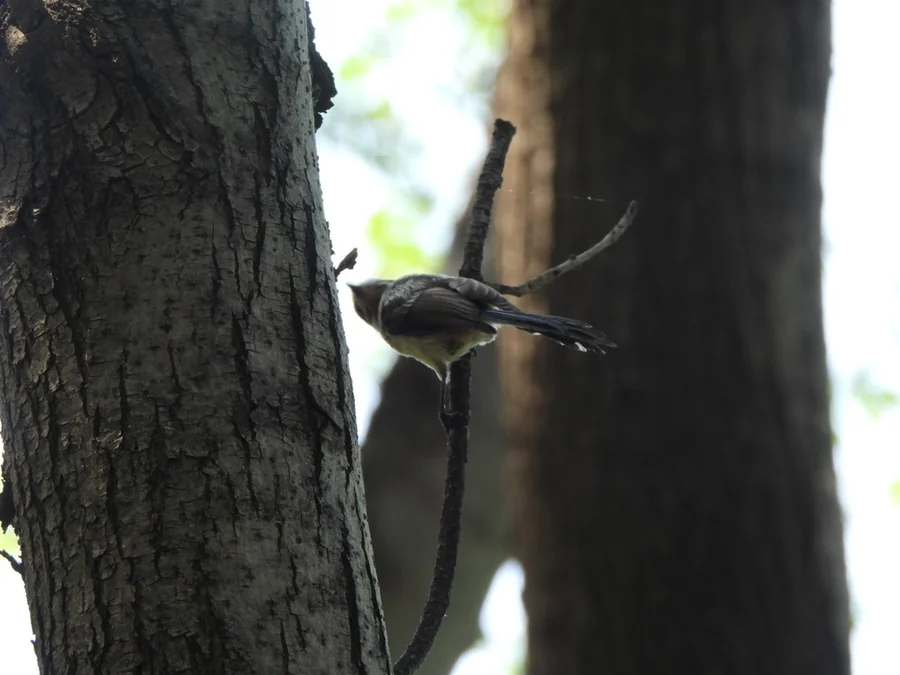

鸟类 · 动物界
银喉长尾山雀 Aegithalos glaucogularis

中国特有的小型山雀，体圆尾长、喉部银白，常成群在枝头跳跃，冬季会挤在一起取暖。
- 分类
- 门脊索动物门纲鸟纲目雀形目科长尾山雀科属长尾山雀属
- 栖息环境
- 山地与丘陵的阔叶林、混交林、林缘灌丛
- 地理分布
- 中国华北、华中、西南及华东部分山区，为中国特有
- 保护级别
- IUCN 无危（LC）
物种志
银喉长尾山雀体长约 16 cm，其中尾羽占去近一半；身体圆滚，头顶黑色，喉部银白，背灰褐，腹部白色并带淡粉色。它常以小群在阔叶林、混交林的枝冠层活动，边跳跃边发出细弱的叫声，取食昆虫、蜘蛛和虫卵，秋冬也吃少量植物种子。
这种山雀为中国特有，分布于华北、华中、西南等地的山地与丘陵林地。繁殖期用苔藓、树皮和羽毛编织球形巢，巢口开在侧面。冬季它们会几只挤在一起取暖，是常见的“抱团过冬”鸟类。种群总体稳定，但依赖成熟的阔叶林与灌丛，林地碎片化会影响其生存。
形态与习性
- 体长约 16 cm，尾羽占近一半
- 外形体圆、头顶黑、喉部银白
- 食性昆虫、蜘蛛为主，秋冬兼食种子
- 习性成群活动，冬季会挤在一起取暖
- 巢苔藓、树皮与羽毛编成的球形巢
趣味知识
- 银喉长尾山雀的尾羽几乎和身体一样长，飞起来像一枚小梭子。
- 冬季多只挤在枝头取暖，是社交媒体上常见的“小肥啾”。
- 它为中国特有鸟类，依赖成熟林地与灌丛。